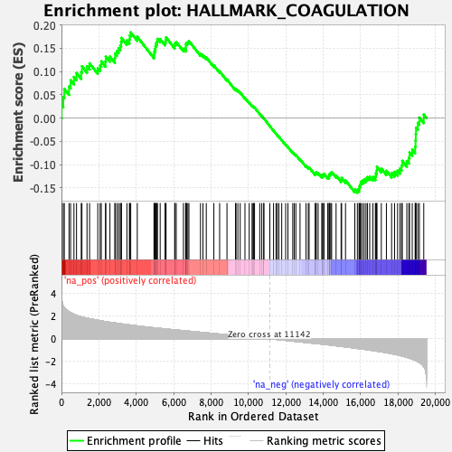
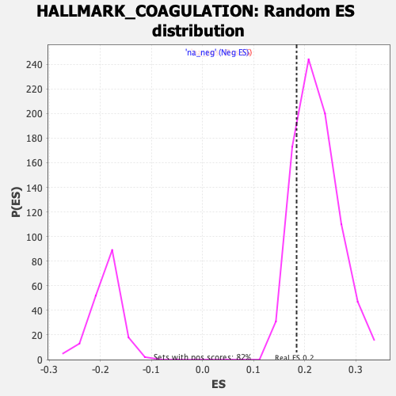

| | | Dataset | CK_basal |
| Phenotype | NoPhenotypeAvailable |
| Upregulated in class | na_pos |
| GeneSet | HALLMARK_COAGULATION |
| Enrichment Score (ES) | 0.18406372 |
| Normalized Enrichment Score (NES) | 0.82417876 |
| Nominal p-value | 0.8258222 |
| FDR q-value | 0.8730425 |
| FWER p-Value | 1.0 |
Table: GSEA Results Summary

Fig 1: Enrichment plot: HALLMARK_COAGULATION
Profile of the Running ES Score & Positions of GeneSet Members on the Rank Ordered List
| SYMBOL | RANK IN GENE LIST | RANK METRIC SCORE | RUNNING ES | CORE ENRICHMENT | | 1 | RGN | 10 | 3.726 | 0.0276 | Yes |
| 2 | F12 | 98 | 2.897 | 0.0449 | Yes |
| 3 | MMP14 | 151 | 2.745 | 0.0629 | Yes |
| 4 | THBD | 404 | 2.406 | 0.0680 | Yes |
| 5 | MMP7 | 488 | 2.318 | 0.0812 | Yes |
| 6 | F13B | 667 | 2.175 | 0.0884 | Yes |
| 7 | PRSS23 | 805 | 2.082 | 0.0970 | Yes |
| 8 | ANXA1 | 1057 | 1.944 | 0.0987 | Yes |
| 9 | PF4 | 1095 | 1.929 | 0.1114 | Yes |
| 10 | MST1 | 1366 | 1.825 | 0.1112 | Yes |
| 11 | GP1BA | 1503 | 1.781 | 0.1176 | Yes |
| 12 | ANG | 1942 | 1.643 | 0.1074 | Yes |
| 13 | ITGB3 | 2067 | 1.608 | 0.1131 | Yes |
| 14 | C8A | 2129 | 1.590 | 0.1219 | Yes |
| 15 | F11 | 2355 | 1.518 | 0.1217 | Yes |
| 16 | MMP9 | 2371 | 1.514 | 0.1324 | Yes |
| 17 | KLK8 | 2592 | 1.463 | 0.1320 | Yes |
| 18 | FN1 | 2856 | 1.403 | 0.1290 | Yes |
| 19 | F9 | 2870 | 1.400 | 0.1389 | Yes |
| 20 | S100A13 | 2967 | 1.377 | 0.1443 | Yes |
| 21 | MAFF | 3057 | 1.357 | 0.1500 | Yes |
| 22 | LTA4H | 3145 | 1.336 | 0.1556 | Yes |
| 23 | CD9 | 3189 | 1.328 | 0.1633 | Yes |
| 24 | DPP4 | 3209 | 1.324 | 0.1723 | Yes |
| 25 | MASP2 | 3499 | 1.258 | 0.1669 | Yes |
| 26 | MMP15 | 3633 | 1.226 | 0.1693 | Yes |
| 27 | S100A1 | 3653 | 1.222 | 0.1775 | Yes |
| 28 | FURIN | 3704 | 1.211 | 0.1841 | Yes |
| 29 | BMP1 | 4054 | 1.144 | 0.1747 | No |
| 30 | CFB | 4948 | 0.979 | 0.1360 | No |
| 31 | SERPING1 | 4965 | 0.976 | 0.1425 | No |
| 32 | F2RL2 | 4998 | 0.971 | 0.1482 | No |
| 33 | WDR1 | 5028 | 0.965 | 0.1540 | No |
| 34 | ARF4 | 5057 | 0.960 | 0.1597 | No |
| 35 | HPN | 5109 | 0.952 | 0.1643 | No |
| 36 | APOC3 | 5132 | 0.948 | 0.1703 | No |
| 37 | CASP9 | 5279 | 0.922 | 0.1697 | No |
| 38 | ITIH1 | 5541 | 0.874 | 0.1628 | No |
| 39 | RAPGEF3 | 5572 | 0.869 | 0.1678 | No |
| 40 | SERPINB2 | 5593 | 0.865 | 0.1733 | No |
| 41 | CPN1 | 6056 | 0.799 | 0.1555 | No |
| 42 | SIRT2 | 6067 | 0.798 | 0.1610 | No |
| 43 | P2RY1 | 6140 | 0.785 | 0.1632 | No |
| 44 | TFPI2 | 6522 | 0.725 | 0.1490 | No |
| 45 | PLAU | 6639 | 0.704 | 0.1483 | No |
| 46 | SERPINA1 | 6651 | 0.703 | 0.1531 | No |
| 47 | CRIP2 | 6652 | 0.703 | 0.1584 | No |
| 48 | MEP1A | 6690 | 0.697 | 0.1617 | No |
| 49 | OLR1 | 6759 | 0.689 | 0.1634 | No |
| 50 | TF | 6817 | 0.677 | 0.1655 | No |
| 51 | LEFTY2 | 7436 | 0.581 | 0.1380 | No |
| 52 | F8 | 7568 | 0.557 | 0.1355 | No |
| 53 | PDGFB | 7745 | 0.531 | 0.1304 | No |
| 54 | CTSB | 8149 | 0.470 | 0.1132 | No |
| 55 | GSN | 8459 | 0.421 | 0.1004 | No |
| 56 | C9 | 8852 | 0.362 | 0.0829 | No |
| 57 | CTSV | 9306 | 0.287 | 0.0617 | No |
| 58 | CTSE | 9337 | 0.282 | 0.0623 | No |
| 59 | SERPINE1 | 9435 | 0.268 | 0.0593 | No |
| 60 | C1QA | 9559 | 0.246 | 0.0548 | No |
| 61 | F10 | 9814 | 0.211 | 0.0433 | No |
| 62 | DCT | 10041 | 0.176 | 0.0330 | No |
| 63 | MMP2 | 10193 | 0.153 | 0.0263 | No |
| 64 | MSRB2 | 10246 | 0.144 | 0.0247 | No |
| 65 | DUSP6 | 10268 | 0.141 | 0.0247 | No |
| 66 | ADAM9 | 10326 | 0.133 | 0.0228 | No |
| 67 | MMP8 | 10605 | 0.088 | 0.0091 | No |
| 68 | APOC2 | 10713 | 0.069 | 0.0041 | No |
| 69 | HMGCS2 | 10818 | 0.052 | -0.0009 | No |
| 70 | ITGA2 | 10826 | 0.051 | -0.0009 | No |
| 71 | C2 | 11144 | -0.000 | -0.0172 | No |
| 72 | SH2B2 | 11341 | -0.031 | -0.0271 | No |
| 73 | COMP | 11473 | -0.051 | -0.0335 | No |
| 74 | CPB2 | 11542 | -0.062 | -0.0365 | No |
| 75 | MMP11 | 11625 | -0.073 | -0.0402 | No |
| 76 | PROC | 11780 | -0.098 | -0.0474 | No |
| 77 | C8G | 11991 | -0.133 | -0.0572 | No |
| 78 | PROS1 | 12111 | -0.154 | -0.0622 | No |
| 79 | CTSO | 12370 | -0.199 | -0.0740 | No |
| 80 | MMP3 | 12448 | -0.213 | -0.0764 | No |
| 81 | FGG | 12535 | -0.228 | -0.0791 | No |
| 82 | MMP1 | 12759 | -0.266 | -0.0886 | No |
| 83 | CFD | 13077 | -0.318 | -0.1025 | No |
| 84 | RAC1 | 13197 | -0.340 | -0.1061 | No |
| 85 | GP9 | 13245 | -0.349 | -0.1059 | No |
| 86 | LRP1 | 13570 | -0.404 | -0.1196 | No |
| 87 | GDA | 13584 | -0.408 | -0.1172 | No |
| 88 | DUSP14 | 13633 | -0.417 | -0.1165 | No |
| 89 | LGMN | 13729 | -0.432 | -0.1182 | No |
| 90 | CFI | 13930 | -0.467 | -0.1250 | No |
| 91 | PLAT | 13936 | -0.468 | -0.1217 | No |
| 92 | CFH | 14016 | -0.481 | -0.1221 | No |
| 93 | USP11 | 14038 | -0.485 | -0.1196 | No |
| 94 | SERPINC1 | 14235 | -0.523 | -0.1258 | No |
| 95 | PEF1 | 14313 | -0.536 | -0.1257 | No |
| 96 | FBN1 | 14318 | -0.536 | -0.1219 | No |
| 97 | C1R | 14353 | -0.544 | -0.1195 | No |
| 98 | ACOX2 | 14405 | -0.553 | -0.1180 | No |
| 99 | TIMP3 | 14450 | -0.563 | -0.1160 | No |
| 100 | PECAM1 | 14687 | -0.614 | -0.1235 | No |
| 101 | CAPN5 | 14955 | -0.666 | -0.1323 | No |
| 102 | FYN | 14985 | -0.673 | -0.1287 | No |
| 103 | PLG | 15192 | -0.714 | -0.1340 | No |
| 104 | THBS1 | 15690 | -0.817 | -0.1535 | No |
| 105 | CTSH | 15825 | -0.852 | -0.1540 | No |
| 106 | HTRA1 | 15912 | -0.871 | -0.1518 | No |
| 107 | KLF7 | 15941 | -0.874 | -0.1467 | No |
| 108 | CTSK | 15984 | -0.880 | -0.1422 | No |
| 109 | MMP10 | 16008 | -0.886 | -0.1367 | No |
| 110 | C8B | 16099 | -0.905 | -0.1346 | No |
| 111 | HNF4A | 16191 | -0.921 | -0.1323 | No |
| 112 | MBL2 | 16289 | -0.944 | -0.1302 | No |
| 113 | CSRP1 | 16364 | -0.959 | -0.1268 | No |
| 114 | PREP | 16486 | -0.988 | -0.1256 | No |
| 115 | SPARC | 16656 | -1.032 | -0.1265 | No |
| 116 | VWF | 16787 | -1.066 | -0.1252 | No |
| 117 | APOC1 | 16813 | -1.073 | -0.1184 | No |
| 118 | GNG12 | 16858 | -1.083 | -0.1125 | No |
| 119 | RABIF | 16871 | -1.087 | -0.1050 | No |
| 120 | APOA1 | 17107 | -1.139 | -0.1085 | No |
| 121 | F2 | 17379 | -1.223 | -0.1133 | No |
| 122 | C3 | 17657 | -1.313 | -0.1177 | No |
| 123 | F3 | 17816 | -1.361 | -0.1156 | No |
| 124 | PROZ | 17978 | -1.420 | -0.1132 | No |
| 125 | A2M | 18104 | -1.476 | -0.1085 | No |
| 126 | ISCU | 18192 | -1.509 | -0.1016 | No |
| 127 | TIMP1 | 18228 | -1.524 | -0.0919 | No |
| 128 | PLEK | 18472 | -1.630 | -0.0922 | No |
| 129 | CPQ | 18581 | -1.691 | -0.0850 | No |
| 130 | KLKB1 | 18616 | -1.708 | -0.0739 | No |
| 131 | GNB2 | 18761 | -1.788 | -0.0679 | No |
| 132 | HRG | 18915 | -1.885 | -0.0616 | No |
| 133 | C1S | 18936 | -1.901 | -0.0483 | No |
| 134 | FGA | 18949 | -1.915 | -0.0344 | No |
| 135 | CLU | 18962 | -1.926 | -0.0206 | No |
| 136 | CAPN2 | 19058 | -2.009 | -0.0103 | No |
| 137 | TMPRSS6 | 19141 | -2.082 | 0.0011 | No |
| 138 | LAMP2 | 19377 | -2.465 | 0.0076 | No |
Table: GSEA details [plain text format]

Fig 2: HALLMARK_COAGULATION: Random ES distribution
Gene set null distribution of ES for HALLMARK_COAGULATION